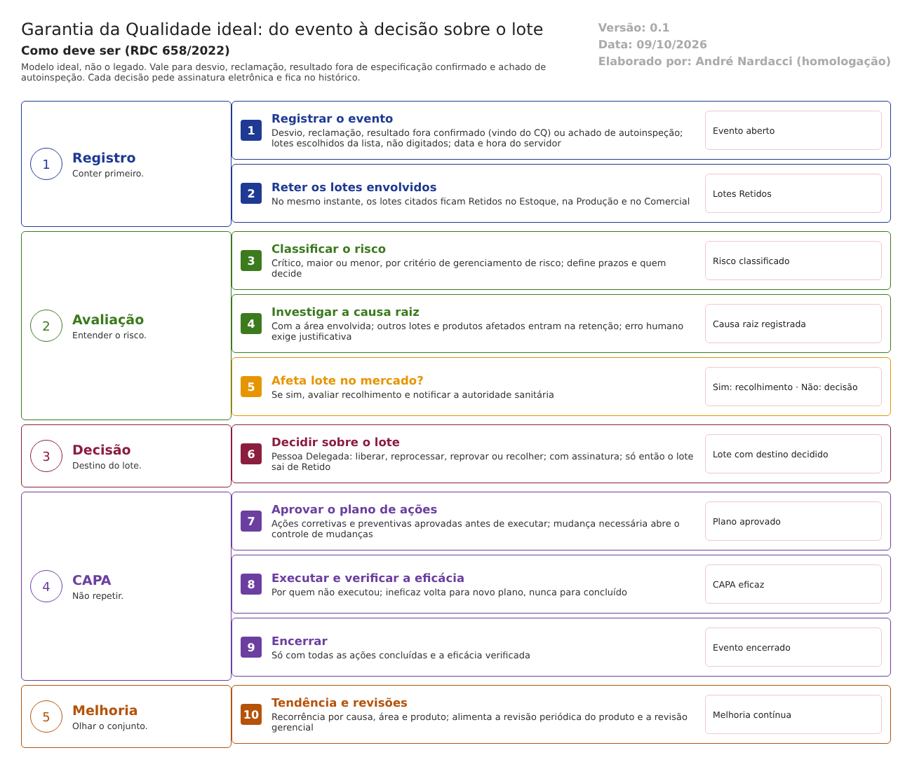

O ideal. Como a Garantia da Qualidade deve trabalhar para atender à RDC 658/2022 e ao Guia 33/2020. Este documento não descreve o legado. Usa o que foi levantado no código só para mostrar o que manter, o que corrigir e o que construir. Complementa modelo-ideal/01-qualidade-entre-modulos.md (a situação única do lote e as 11 travas). Versão 0.1, de 09/10/2026, para validação com a Garantia da Qualidade.
1. O papel da GQ no ERP
A GQ é dona do Sistema da Qualidade Farmacêutica: trata desvios, reclamações e recolhimentos, aprova mudanças e qualifica fornecedores. Também mantém o treinamento, os registros dos produtos e as revisões, e certifica cada lote pela Pessoa Delegada (RDC 658/2022, arts. 8º e 14, VII).
No legado, a GQ registra tudo isso, mas não impede nada. No modelo ideal, cada decisão da GQ vira uma trava no ERP (documento 01, travas 3 a 8 e 11):
| A GQ decide e o ERP obedece | Trava |
|---|---|
| Desvio, reclamação ou investigação aberta → o lote fica Retido | 3, 11 |
| Só a Pessoa Delegada libera o produto acabado para venda | 4 |
| Só fornecedor qualificado entrega material | 5 |
| Só pessoa treinada executa a etapa | 6 |
| Só produto com registro válido é fabricado | 7 |
| Mudança só depois de aprovada, com nova versão do documento e da especificação | 8 |
| Recolhimento marca os lotes e mostra onde estão | 11 |
2. Como o trabalho anda
O mesmo caminho vale para desvio, reclamação, resultado fora de especificação confirmado pelo CQ e achado de autoinspeção:

Regras do caminho: - Conter primeiro: o lote é retido no momento do registro, antes da investigação. - Quem executa não aprova: quem abre o evento não o encerra; quem executa a ação não verifica a eficácia. - Nenhuma etapa sem saída: reprovar a eficácia volta para um novo plano. Nunca leva a "concluído", nem deixa o evento parado. - Nada some: cancelar ou excluir exige motivo e fica no histórico.
3. As funções da GQ ideal
Ação: Manter = o legado já faz como deve; Corrigir = existe, mas não atende; Construir = não existe ou é só protótipo.
| # | Função | Referência | Ação | Como deve funcionar | No legado hoje |
|---|---|---|---|---|---|
| 1 | Desvios com retenção do lote | Art. 8º, XIV; art. 148, XII | Corrigir | Lotes escolhidos da lista, retidos ao registrar. Risco classificado na pré-avaliação. Investigação da causa raiz pela área, conferida ao gravar. Decisão sobre o lote antes de encerrar | Lote é texto e não é retido; data da tela; pré-avaliação sem risco; área não conferida ao gravar |
| 2 | Ações corretivas e preventivas (CAPA) e eficácia | Arts. 341 e 342 | Corrigir | Plano aprovado antes da execução. Eficácia verificada por quem não executou. Ineficaz volta para novo plano. Tendência por causa, área e produto | Plano vai para execução sem aprovação; eficácia reprovada fica sem saída ou vira "concluído"; sem tendência |
| 3 | Controle de mudanças | Art. 8º, XII e XIII | Corrigir | Áreas de impacto obrigatórias e todos os pareceres antes da aprovação. Plano aprovado. Ao implementar, nova versão do documento (Controle de Documentos) e da especificação (CQ). Eficácia verificada. Mudança temporária vence sozinha | Aprova sem o parecer das áreas; finaliza sem ações concluídas; sem eficácia; não liga a nada |
| 4 | Autoinspeção e auditoria | Arts. 361 e 363 | Corrigir | Programa anual aprovado. Inspetor independente da área, conferido ao gravar. A área auditada não altera as respostas. Cada não conformidade vira desvio ou CAPA | Área auditada edita as próprias respostas; achados digitados, sem abrir desvio |
| 5 | Qualificação e auditoria de fornecedores | Art. 8º, VI; arts. 179 e 180 | Construir | Um único cadastro de fornecedor qualificado por material e fabricante, com situação (qualificado, condicional, desqualificado), validade e auditorias. O Estoque consulta no recebimento | Três versões (Estoque, CQ, GQ), nenhuma consultada; avaliação na GQ é protótipo; sem auditoria de fornecedor |
| 6 | Treinamento e eficácia | Arts. 39, 40 e 42 | Corrigir | Programa aprovado. Conclusão com critério de aproveitamento: ausente não recebe validade. Aviso antes de vencer. A Produção e o CQ conferem o treinamento válido antes da etapa | "Suficiente" sem critério; vencido só no relatório, sem bloqueio |
| 7 | Reclamações | Arts. 319 e 320 | Construir | Registro, avaliação de risco, investigação e resposta, ligados ao lote e ao cliente (Comercial). Lote retido enquanto houver suspeita | Não existe |
| 8 | Recolhimento | Arts. 343 e 344 | Construir | Decisão registrada, lotes marcados como Recolhidos, lista de clientes que receberam (Comercial e Rastreabilidade), controle do que voltou e simulação periódica | Não existe |
| 9 | Notificação à autoridade sanitária | Arts. 321, 338 e 351 | Construir | O sistema indica quando o desvio ou o recolhimento exige notificação e registra quando e como ela foi feita | Não existe fora do item "Regulatórios" da mudança |
| 10 | Liberação do lote pela Pessoa Delegada | Art. 8º, XV; art. 14, VII | Construir | Tela de certificação do lote acabado: laudo do CQ aprovado, registro do lote revisado, nenhum desvio aberto, registro do produto válido. Assinatura da Pessoa Delegada. Só então o lote fica "Liberado para venda" | Não existe; a aprovação do laudo faz as vezes |
| 11 | Registro do produto e assuntos regulatórios | Art. 8º, XII | Corrigir | Situação do registro de cada produto (deferido, vencido, indeferido) consultada pela Produção (trava 7) e pelo Comercial. Envio à ANVISA só com o check-list completo. Aviso antes do vencimento | Envia sem conferir o check-list; registro vencido não bloqueia nada; tela de exigências não abre |
| 12 | Revisão periódica do produto | Art. 15 | Construir | Por produto e por ano, reúne automaticamente lotes, resultados e tendências do CQ, desvios, mudanças, reclamações, recolhimentos e estabilidade | Protótipo (duas versões, nenhuma grava) |
| 13 | Validação, qualificação e calibração | Art. 148, I e II; art. 175 | Construir | Plano mestre, protocolos e relatórios por processo, equipamento e sistema. Equipamento vencido fica bloqueado para a Produção e o CQ | 9 protótipos; Controle de Calibração é protótipo |
| 14 | Gerenciamento de risco da qualidade | Art. 21; art. 320 | Corrigir | Um método único de classificação de risco, usado no desvio, na reclamação, na mudança e no CAPA, com os mesmos níveis | Critérios diferentes em cada tela |
| 15 | Revisão gerencial | Art. 10 | Construir | Painel periódico para a diretoria: desvios, CAPA, mudanças, reclamações, recolhimentos, autoinspeções e indicadores, com a ata e as decisões | Não existe |
4. Integrações com os outros módulos
Todas as integrações seguem o requisito 16 do documento 01: quando falham, avisam e não deixam a operação pela metade.
| Com | A GQ recebe | A GQ envia | Trava |
|---|---|---|---|
| Estoque | Lotes, fornecedores e recebimentos; o que voltou no recolhimento | Lote Retido ou Recolhido; fornecedor qualificado ou não | 3, 5, 11 |
| Produção | Desvios de processo; registro do lote para a liberação | Treinamento válido por pessoa e procedimento; registro do produto válido; equipamento qualificado | 6, 7 |
| Controle da Qualidade | Resultado fora de especificação confirmado; tendências; laudos para a liberação e para a revisão periódica | Mudança aprovada (nova especificação); fornecedor qualificado; treinamento dos analistas | 8, 10 |
| Controle de Documentos | Procedimentos vigentes para o treinamento | Mudança aprovada (nova versão); treinamento obrigatório a cada nova versão | 6, 8 |
| Comercial e Rastreabilidade | Reclamações dos clientes; para onde foi cada lote | Lote Retido, Recolhido ou Liberado para venda; registro do produto válido | 4, 11 |
| Principal | Usuários, áreas, funções e assinatura eletrônica | — | — |
5. Quem faz o quê na GQ
| Função | Pode | Não pode |
|---|---|---|
| Qualquer usuário | Registrar um desvio ou uma reclamação | Classificar, encerrar ou cancelar |
| Área envolvida | Investigar a causa e propor ações | Aprovar o próprio plano; editar respostas da autoinspeção na sua área |
| Analista da GQ | Pré-avaliar, conduzir a investigação, acompanhar CAPA, mudança, treinamento e regulatório | Aprovar o que conduziu |
| Gestor da GQ | Aprovar planos, mudanças e encerramentos; verificar a eficácia | Verificar a eficácia de ação que executou |
| Pessoa Delegada | Certificar o lote para venda; decidir o destino de lote retido; decidir o recolhimento | Liberar lote com desvio aberto |
| Inspetor | Registrar a autoinspeção de área que não é a sua | Inspecionar a própria área |
A função é conferida no servidor, em toda gravação (documento 01, requisito 15). Toda aprovação pede assinatura eletrônica (requisito 14). Os níveis de perfil 1, 2 e 3 do legado (Grupo Perfil) podem servir de base, desde que ligados a estas funções.
6. O que manter do legado
O que o código mostra que já está bem desenhado e vale levar para a nova versão (a confirmar nos testes):
- O caminho completo do desvio: registro, ação imediata, pré-avaliação, avaliação da área, avaliação, CAPA, planos, execução e monitoramento. É o maior conjunto de telas que funcionam na GQ.
- O caminho do controle de mudanças: solicitação, pré-avaliação, avaliação, liberação, plano, execução e finalização.
- A matriz de treinamento e a ligação do treinamento com os documentos do Controle de Documentos.
- O cadastro de roteiros e a programação da autoinspeção.
- O histórico de alterações (FluentLog) onde ele já existe. Estender a todas as gravações, com o motivo.
7. Pontos para validar com a Garantia da Qualidade
- Quem é a Pessoa Delegada e quem a substitui; se pode ser a mesma pessoa que chefia o CQ.
- Como a empresa trata hoje reclamações, recolhimento, revisão periódica, validação e calibração (papel, planilha, outro sistema), para a migração.
- Qual escala de risco a empresa usa e se ela vale para todos os processos da GQ.
- Se a qualificação de fornecedor fica na GQ ou num cadastro comum com Compras e Estoque.
- Qual instrução normativa de sistemas computadorizados vale (IN 134/2022, a confirmar). Ela não está na pasta
Documentação/.
O que a ANVISA pede: textos citados
Texto literal das normas citadas em cada tema, extraído dos arquivos da pasta Documentação/ (RDC nº 658/2022 em português e Guia nº 33/2020) por homologacao/ferramentas/citar_normas_diagnostico.py. "(...)" marca trechos omitidos. No portal, clique na referência de cada tema para ver o texto.
Tema 1 · Desvios com retenção do lote
RDC 658/2022, art. 8º
Art. 8º Um Sistema da Qualidade Farmacêutica adequado à fabricação de medicamentos deve garantir que:
(...)
XIV - um nível apropriado de análise da causa raiz seja aplicado durante a investigação de desvios, suspeitas de defeitos no produto e outros problemas;
(...)
RDC 658/2022, art. 148
Art. 148. Deve haver políticas, procedimentos, protocolos, relatórios e registros de ações tomadas ou conclusões alcançadas, quando apropriado, para os seguintes exemplos:
(...)
XII - investigações sobre desvios e não conformidades;
(...)
Tema 2 · Ações corretivas e preventivas (CAPA) e eficácia
RDC 658/2022, art. 341
Art. 341. Ações corretivas e preventivas apropriadas devem ser elaboradas e adotadas em resposta aos desvios de qualidade.
Parágrafo único. A efetividade das ações corretivas e preventivas deve ser monitorada e avaliada.
RDC 658/2022, art. 342
Art. 342. Os registros de desvios de qualidade devem ser regularmente revisados e análises de tendência devem ser regularmente aplicadas para a indicação de desvios recorrentes que requeiram atenção adicional.
Tema 3 · Controle de mudanças
RDC 658/2022, art. 8º
Art. 8º Um Sistema da Qualidade Farmacêutica adequado à fabricação de medicamentos deve garantir que:
(...)
XII - estejam implementados procedimentos para a avaliação prospectiva de mudanças planejadas e sua aprovação antes da implementação, levando-se em consideração as notificações e aprovações regulatórias, quando necessário;
XIII - após a implementação de qualquer mudança, uma avaliação seja realizada para confirmar que os objetivos de qualidade foram alcançados e que não houve impacto prejudicial não intencional na qualidade do produto;
(...)
Tema 4 · Autoinspeção e auditoria
RDC 658/2022, art. 361
Art. 361. Devem ser realizadas autoinspeções a fim de monitorar a implementação e a conformidade com os princípios das Boas Práticas de Fabricação, e propor as medidas corretivas necessárias.
RDC 658/2022, art. 363
Art. 363. As autoinspeções devem ser conduzidas de forma independente e detalhada por pessoa(s) competente(s) designada(s) pela empresa.
Parágrafo único. Auditorias independentes, realizadas por especialistas externos, podem ser utilizadas.
Tema 5 · Qualificação e auditoria de fornecedores
RDC 658/2022, art. 8º
Art. 8º Um Sistema da Qualidade Farmacêutica adequado à fabricação de medicamentos deve garantir que:
(...)
VI - sejam tomadas providências para a fabricação, fornecimento e uso das matérias-primas e materiais de embalagem corretos, a seleção e monitoramento dos fornecedores e verificação da conformidade de cada recebimento com o fornecedor aprovado;
(...)
RDC 658/2022, art. 179
Art. 179. A seleção, qualificação, aprovação e manutenção de fornecedores de matérias-primas, juntamente com o seu processo de compra e aceitação, devem ser documentados como parte do Sistema de Gestão da Qualidade Farmacêutica.
§ 1º O nível de supervisão das atividades referidas no caput deste artigo deve ser proporcional aos riscos apresentados pelos materiais individuais, levando-se em conta a sua origem, o processo de fabricação, a complexidade da cadeia de suprimento e a utilização final a que o material é colocado no medicamento.
§ 2º A evidência da aprovação de cada fornecedor/material deve estar disponível.
§ 3º A equipe envolvida nas atividades referidas no caput deste artigo deve possuir um conhecimento atualizado sobre os fornecedores, da cadeia de suprimento e dos riscos associados.
§ 4º Sempre que possível, as matérias-primas devem ser adquiridas diretamente do seu fabricante.
RDC 658/2022, art. 180
Art. 180. Os requisitos de qualidade estabelecidos pelo fabricante para as matérias-primas devem ser discutidos e acordados com os fornecedores.
Parágrafo único. Aspectos apropriados da produção, teste e controle, incluindo os requisitos de manuseio, rotulagem, embalagem e procedimentos de distribuição, reclamações, recolhimento e reprovação devem estar documentados como parte de um acordo formal de qualidade ou especificação.
Tema 6 · Treinamento e eficácia
RDC 658/2022, art. 39
Art. 39. O fabricante deve fornecer treinamento para todo o pessoal cujas funções sejam exercidas nas áreas de produção e armazenamento ou laboratórios de controle (incluindo o pessoal técnico, de manutenção e limpeza) e para outras pessoas cujas atividades possam afetar a qualidade do
produto.
RDC 658/2022, art. 40
Art. 40. Além do treinamento básico sobre a teoria e a prática do Sistema da Qualidade Farmacêutica e das BPF, o pessoal recém-contratado deve receber treinamento adequado às tarefas que lhe são atribuídas.
RDC 658/2022, art. 42
Art. 42. Os programas de treinamento devem estar disponíveis, aprovados pelo Responsável pela Produção ou pelo Responsável pelo Controle de Qualidade, conforme apropriado.
Tema 7 · Reclamações
RDC 658/2022, art. 319
Art. 319. Deve haver um sistema e procedimentos apropriados para registrar, avaliar, investigar e revisar reclamações, incluindo possíveis desvios de qualidade; e, se necessário, para recolhimento dos medicamentos destinados a uso humano, incluindo os experimentais, de forma efetiva e imediata, da rede de distribuição.
RDC 658/2022, art. 320
Art. 320. Os princípios de Gerenciamento de Risco da Qualidade devem ser aplicados à investigação e avaliação de desvios de qualidade, e ao processo de tomada de decisão para ações corretivas, preventivas e outras ações de redução de riscos em relação ao produto.
Tema 8 · Recolhimento
RDC 658/2022, art. 343
Art. 343. Devem existir procedimentos escritos, que sejam regularmente revistos e atualizados, para a determinação das atividades de recolhimento e de outras ações de mitigação de riscos.
RDC 658/2022, art. 344
Art. 344. Após um produto ter sido distribuído ao mercado, qualquer retirada da rede de distribuição em decorrência de desvio de qualidade deve ser considerada e gerenciada como um recolhimento.
Parágrafo único. O recolhimento não se aplica à recuperação ou devolução de amostras do produto da rede de distribuição para facilitar uma investigação sobre um problema ou desvio de qualidade.
Tema 9 · Notificação à autoridade sanitária
RDC 658/2022, art. 321
Art. 321. Quando evidenciado desvio de qualidade de medicamento, a autoridade sanitária deve ser informada, conforme legislação específica, quando do desvio possa decorrer recolhimento do produto ou redução na oferta deste ao mercado.
RDC 658/2022, art. 338
Art. 338. Os desvios de qualidade devem ser comunicados oportunamente pelo fabricante ao detentor do registro/patrocinador e a todas as autoridades sanitárias pertinentes, nos casos em que o desvio de qualidade puder vir a resultar no recolhimento do produto ou em desabastecimento de mercado.
RDC 658/2022, art. 351
Art. 351. Todas as autoridades sanitárias interessadas devem ser informadas com antecedência nos casos em que exista a intenção do recolhimento.
§ 1º Em situações muito graves, isto é, naquelas com o potencial de causar sérios impactos à saúde do paciente, pode ser necessário tomar medidas rápidas de redução de risco antes de se notificar as autoridades competentes.
§ 2º Sempre que possível, deve-se acordar as medidas com as autoridades competentes, antes da sua execução.
Tema 10 · Liberação do lote pela Pessoa Delegada
RDC 658/2022, art. 8º
Art. 8º Um Sistema da Qualidade Farmacêutica adequado à fabricação de medicamentos deve garantir que:
(...)
XV - os medicamentos não sejam comercializados ou distribuídos antes da Pessoa Delegada pelo Sistema de Gestão da Qualidade Farmacêutica ter certificado que cada lote do produto foi produzido e controlado de acordo com os requerimentos de registro e quaisquer outras normas relevantes à produção, ao controle e à liberação de medicamentos;
(...)
RDC 658/2022, art. 14
Art. 14. Os requerimentos básicos do Controle de Qualidade são:
(...)
VII - nenhum lote de produto deve ser liberado para comercialização ou distribuição antes da certificação, por uma Pessoa Delegada pelo Sistema de Gestão da Qualidade Farmacêutica, de que este está em conformidade com os requerimentos das autorizações relevantes; e
(...)
Tema 11 · Registro do produto e assuntos regulatórios
RDC 658/2022, art. 8º
Art. 8º Um Sistema da Qualidade Farmacêutica adequado à fabricação de medicamentos deve garantir que:
(...)
XII - estejam implementados procedimentos para a avaliação prospectiva de mudanças planejadas e sua aprovação antes da implementação, levando-se em consideração as notificações e aprovações regulatórias, quando necessário;
(...)
Tema 12 · Revisão periódica do produto
RDC 658/2022, art. 15
Art. 15. Revisões periódicas da qualidade de todos os medicamentos autorizados, incluindo produtos exclusivos de exportação, devem ser conduzidas com o objetivo de verificar a consistência do processo existente, verificar a adequação das especificações aplicadas tanto para matéria-prima quanto para produto acabado, evidenciar quaisquer tendências e identificar melhorias em produtos e processos.
Tema 13 · Validação, qualificação e calibração
RDC 658/2022, art. 148
Art. 148. Deve haver políticas, procedimentos, protocolos, relatórios e registros de ações tomadas ou conclusões alcançadas, quando apropriado, para os seguintes exemplos:
I - validação e qualificação de processos, equipamentos e sistemas;
II - montagem e calibração de equipamentos;
(...)
RDC 658/2022, art. 175
Art. 175. Os estudos de validação devem reforçar as Boas Práticas de Fabricação e serem conduzidos de acordo com procedimentos definidos.
Parágrafo único. Os resultados e conclusões dos estudos de validação devem ser registrados.
Tema 14 · Gerenciamento de risco da qualidade
RDC 658/2022, art. 21
Art. 21. O Gerenciamento de Risco da Qualidade (GRQ) é um processo sistemático de avaliação, controle, comunicação e revisão de riscos para a qualidade do medicamento.
Parágrafo único. O Gerenciamento de Risco da Qualidade pode ser aplicado de forma proativa e retrospectiva.
RDC 658/2022, art. 320
Art. 320. Os princípios de Gerenciamento de Risco da Qualidade devem ser aplicados à investigação e avaliação de desvios de qualidade, e ao processo de tomada de decisão para ações corretivas, preventivas e outras ações de redução de riscos em relação ao produto.
Tema 15 · Revisão gerencial
RDC 658/2022, art. 10
Art. 10. Deve haver revisão gerencial periódica, com o envolvimento da administração superior da empresa, do desempenho do Sistema de Gestão da Qualidade Farmacêutica de forma que se identifiquem oportunidades de melhoria contínua de produtos, processos e do próprio sistema.